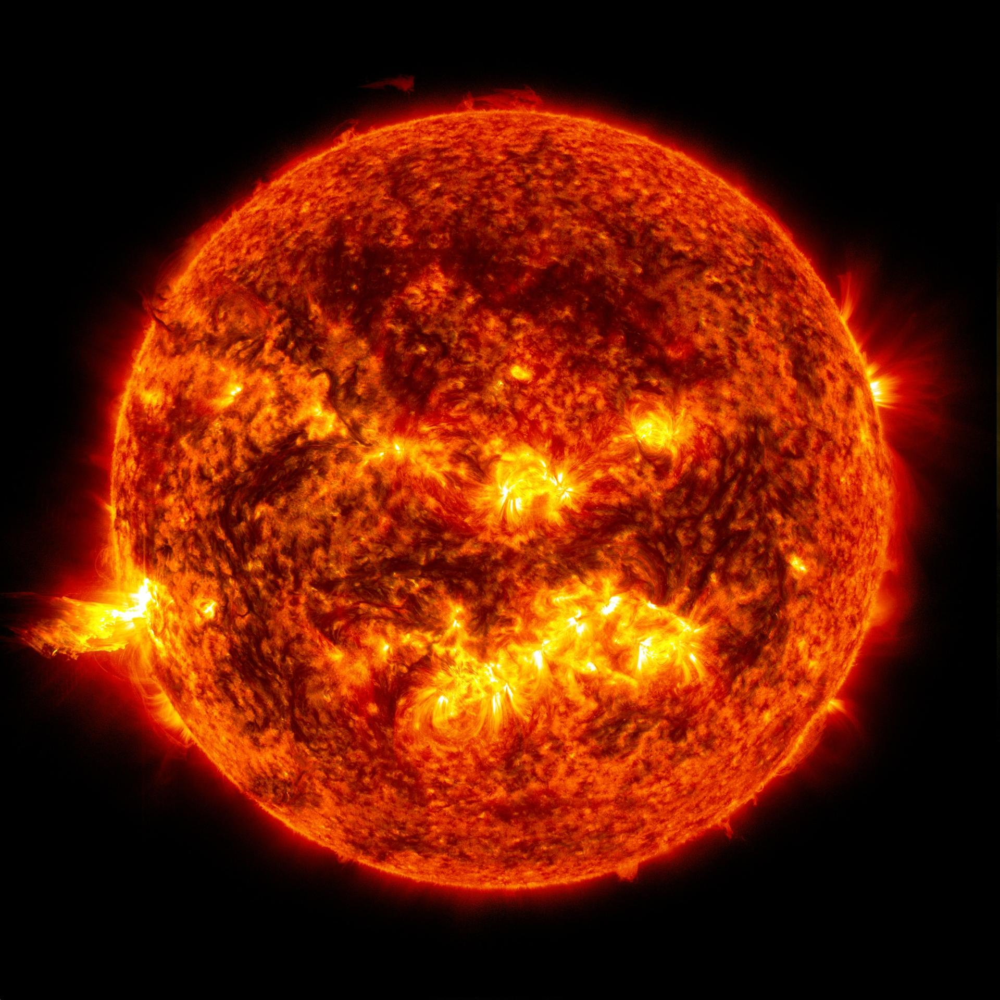
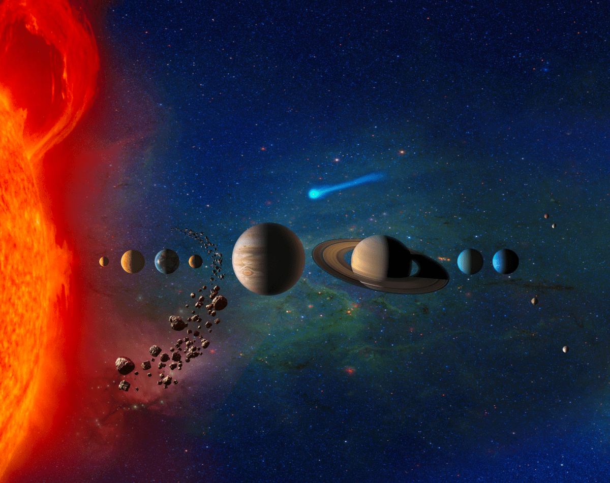
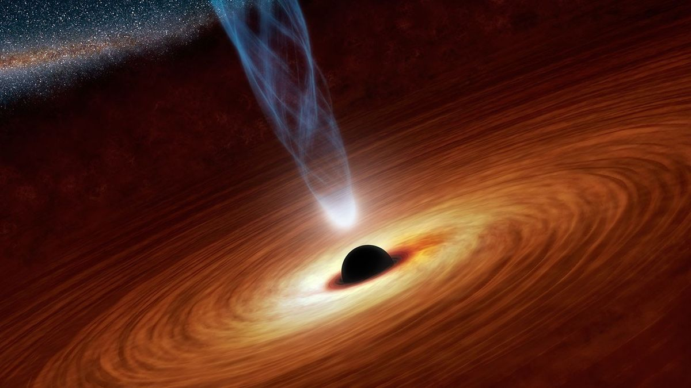
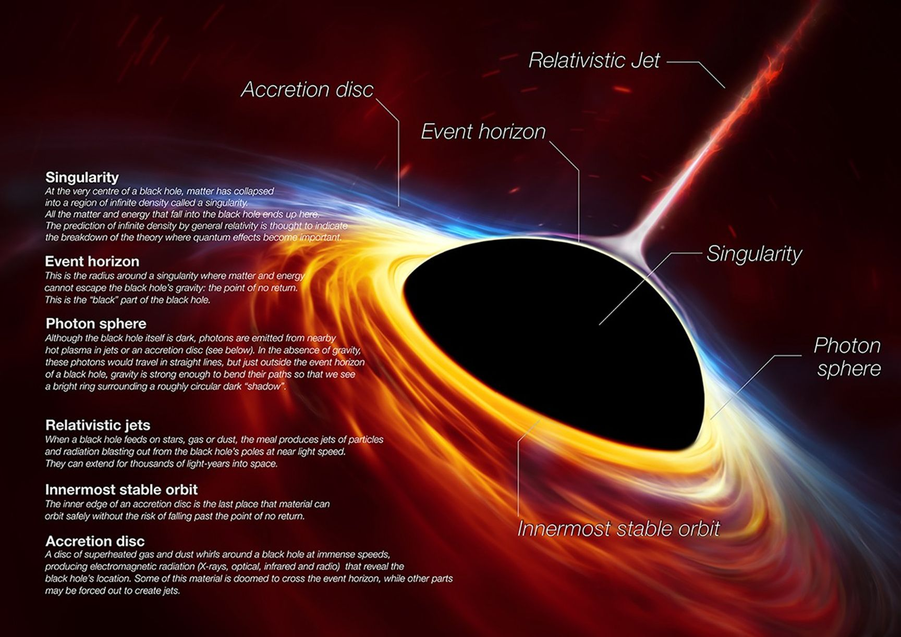

A black hole is a region in space where gravity is so strong that nothing—not even light—can escape from it. It forms when a massive star collapses under its own gravity at the end of its life.
Although black holes are invisible, scientists can detect them by studying how nearby stars, gas, and light behave around them. Black holes play an important role in shaping galaxies and helping us understand the universe.
⭐ Key Facts
⚫ Not a Hole
A black hole is not an empty hole. It is an object with an enormous amount of mass packed into a tiny space.
🌌 Extreme Gravity
Its gravity is so powerful that even light cannot escape once it crosses the event horizon.
⭐ Birth of a Black Hole
Most black holes are created when massive stars collapse after running out of fuel.
🛰️ Invisible
Scientists cannot see black holes directly. They detect them by studying nearby stars, gas, and light.
📏 How Big Is a Black Hole?
Black holes come in different sizes. Some are only a few kilometers across, while others are larger than our entire Solar System.
⭐
Stellar Black Hole
About 10–100 times the mass of our Sun.
🌌
Intermediate Black Hole
About 100–100,000 times the mass of our Sun.
🌠
Supermassive Black Hole
Millions or billions of times the mass of the Sun.
✨
Primordial Black Hole
Hypothetical tiny black holes that may have formed just after the Big Bang.
🌍 From Earth to a Black Hole
Everything in the universe has a different scale. Let's compare our home with some of the most extraordinary objects in space.
🌍 Earth
Diameter: 12,742 km
Our home planet.
📸 Image Credit: NASA Science (science.nasa.gov)

☀️ The Sun
109 Earths fit across the Sun's diameter.
📸 Image Credit: NASA Science (science.nasa.gov)

🪐 Solar System
Our Solar System stretches billions of kilometres into space.
📸 Image Credit: NASA Science (science.nasa.gov)

⚫ Black Hole
Some supermassive black holes are larger than the orbit of Pluto.
📸 Image Credit: NASA Science (science.nasa.gov)
🎥 Watch the Journey Through Scale
Now that you've compared the sizes, watch NASA's official animation to see just how enormous black holes can become.
🎥 Video Credit: NASA's Goddard Space Flight Center
🕳️ Anatomy of a Black Hole
A black hole has several important parts. Each one plays a different role in how a black hole behaves.

📸 Image Credit: NASA Science
⚫ Singularity
The extremely dense centre where matter is compressed into an incredibly small region.
⭕ Event Horizon
The boundary around the black hole. Once anything crosses it, escape is impossible.
🔥 Accretion Disk
A spinning disk of hot gas and dust surrounding the black hole.
✨ Relativistic Jets
Some black holes shoot powerful jets of particles into space at nearly the speed of light.
🌕 Photon Sphere
A region just outside the event horizon where gravity is so strong that light can orbit the black hole. These orbits are unstable, so photons eventually escape or fall in.
🔄 Innermost Stable Circular Orbit (ISCO)
The closest distance from the black hole where matter can orbit in a stable path. Inside this boundary, material rapidly spirals into the black hole.
✨ Relativistic Jets
Some black holes launch powerful jets of charged particles from their poles at nearly the speed of light. These jets can extend for thousands of light-years.
💡 Did You Know?
If the Sun suddenly became a black hole, Earth would continue orbiting almost exactly as it does now. The biggest change would be that the Sun would stop shining!
🧠 Chapter Quiz
1. Can light escape from a black hole?
2. What is the boundary around a black hole called?
Great job! You now know what black holes are, how enormous they can become,
and the parts that make them so fascinating.
In the next chapter, we'll discover how stars collapse to create one of the
most powerful objects in the universe.